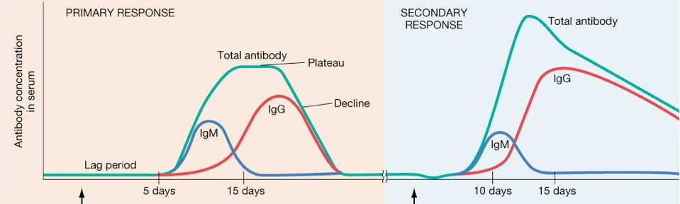
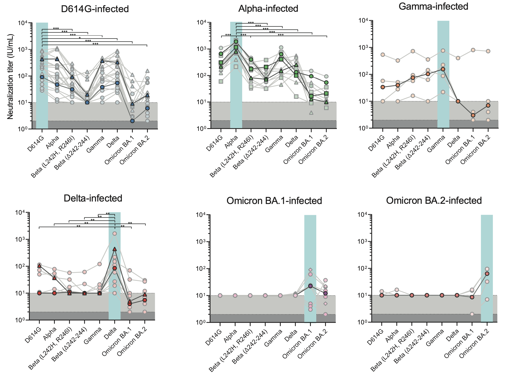
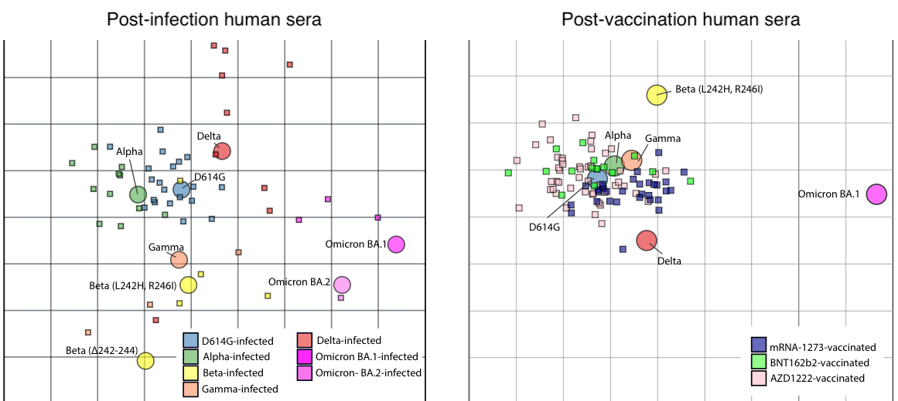
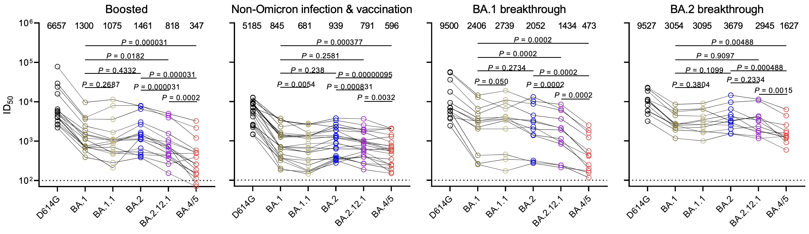
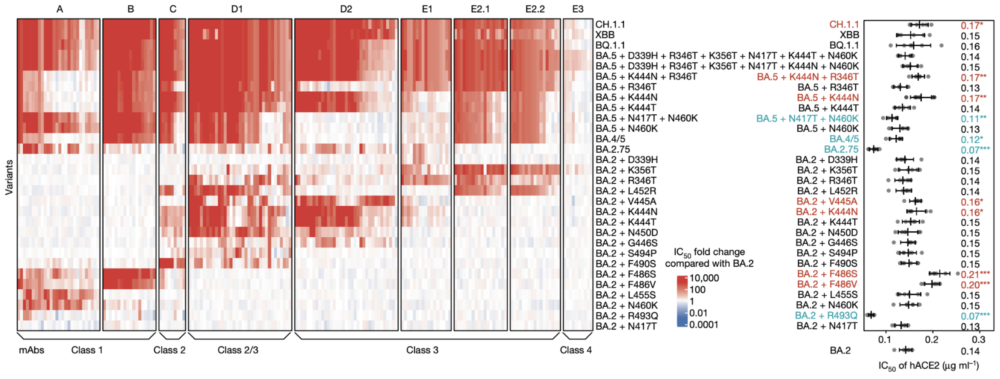

Serology
Serological assays measure circulating antibodies that bind to or neutralize a specific antigen
Antibody response curve
Antibody response curve

Antibodies bind to pathogen epitopes

Influenza hemagglutination inhibition (HI) assay

HI titer correlates strongly with protection

HI assay can measure cross-reactivity

Data presented as pairwise maximum inhibitory titers

Data from many HI assays are hard to summarize

Antigenic cartography
Uses multidimensional scaling (MDS) to position viruses in 2D space such that the distances in this space best fit the HI titers.

Cartography exercise: example
Pairwise titers:
| Serum A | Serum B | |
| Virus A | 2560 | 80 |
| Virus B | 160 | 1280 |
Cartography exercise: example
Convert to distances, based on 2-fold drops in titer from highest titer in a column.
| Serum A | Serum B | |
| Virus A | 0 | 4 |
| Virus B | 4 | 0 |
Cartography exercise: example
Position elements in 2D space so that distances are recapitulated.

Cartography exercise: data
| Serum A | Serum B | Serum C | Serum D | |
| Virus A | 2560 | 80 | 640 | 320 |
| Virus B | 160 | 1280 | 160 | 80 |
| Virus C | 320 | 40 | 5120 | 40 |
| Virus D | 320 | 40 | 80 | 2560 |
Antigenic cartography for H3N2 influenza

Antigenic evolution leads to clade turnover

The WHO has to keep updating vaccine strain to keep up with ongoing evolution

Vaccine strains map to drift events

Complex immune histories
SARS-CoV-2 neutralization titers generally highest against infecting strain
SARS-CoV-2 antigenic cartography possible with immunization by single strains
More complex immune history informs strain-specific titer and makes cartography difficult
New experimental approaches permit decomposition of immune response
Deep mutational scanning (DMS) of monoclonal antibodies against spike diversity
Original antigenic sin
"Humans vaccinated against influenza produce antibodies against the immunizing antigen, but produce antibodies of higher titer against the antigen that was their first childhood experience of influenza, even if that strain happened to be absent from the vaccine."
Plotting human HI titers through time

Infection transiently raises titers

Vaccination shows a similar effect

Titers increase more to older viruses, not to antigenically matched viruses

Central question that's to my knowledge unresolved is the degree to which OAS is zero-sum, ie does efficient boosting of previous response reduce response to novel strain?